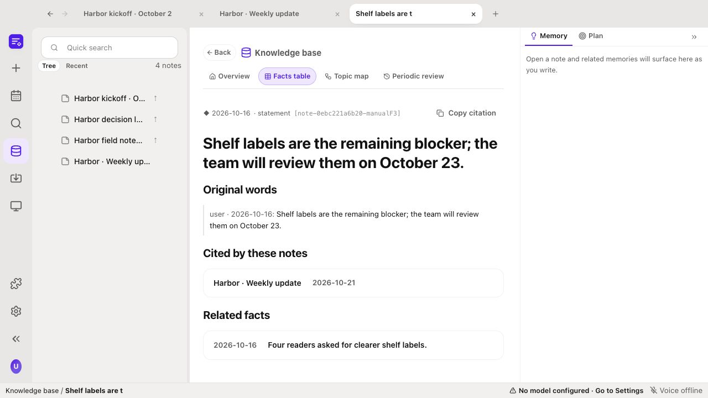
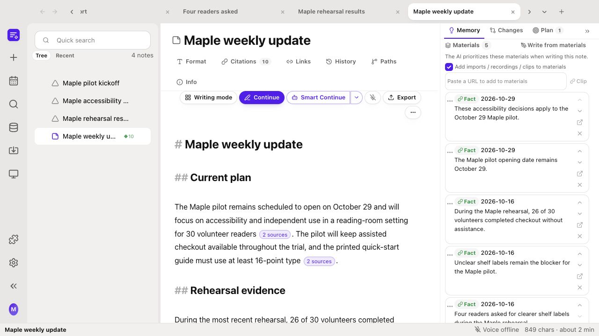

Recall past decisions beside your draft. Follow every saved fact back to its source.

Actual application capture, cropped for readability. All source material is fictional.
The harness runs the writing loop. Your document keeps the task, evidence and edits together.

Actual reviewed draft from a live model run. Automated checks support human review.